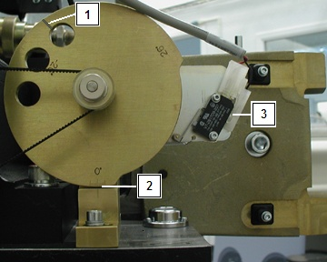

NOTE:
For sites with limited service access to the gantry left side, use the service tool, select
Diagnostics
>
System Troubleshooting Tool
>
Gantry Display
to view actual tilt data.
Illustration 1:
Tilt View
